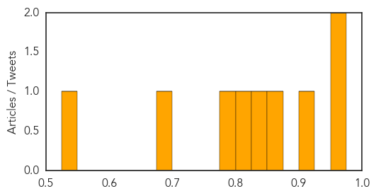
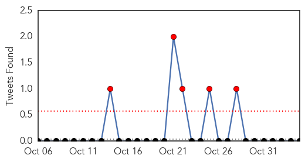

Hepatitis
30-Day Web Trend
6 alerts, 6 warnings

30-Day Twitter Trend
0 alerts, 0 warnings

Article Locations

Article Confidences
Top Articles:
- 0.959
- barfblog
- 0.959
- Hedgehog
- 0.925
- Hepatitis A virus likely of animal origin
- 0.865
- Cherokee Nation conducts study to eliminate hepatitis C among Natives
- 0.830
- Ogden hospital may have exposed 4,800 patients to hepatitis C
- 0.807
- McKay-Dee acted to protect the public's health in hep C scare
- 0.778
- Up to 4,800 patients potentially exposed to hepatitis C at Utah hospital
- 0.681
- Kajaran Medical Center: 16 Patients Contracted Hepatitis-C Due to Cost Cutting
- 0.529
- Hepatitis B exposure trains newborns' immune cells, enhancing their ability to respond to pathogens
Top Tweets:
-
No tweets found for Nov 04, 2015
Meningitis
30-Day Web Trend
0 alerts, 0 warnings

30-Day Twitter Trend
5 alerts, 0 warnings

Article Locations

Article Confidences

Top Articles:
- 0.946
- Health assistance to millions in violence-afflicted Lake Chad Basin hampered by lack of funding
- 0.907
- School in Dubai denies child died due to meningitis
- 0.874
- JamaicaObserver.com
- 0.868
- Suspected meningitis-induced death of school child probed
- 0.844
- Relief among parents in Dubai as meningitis rumours subside
- 0.768
- No confirmed case of meningitis in Dubai, says KHDA
- 0.579
- Serogroup B meningitis vaccine recommended for more young adults for short-term protectin
Top Tweets:
-
No tweets found for Nov 04, 2015